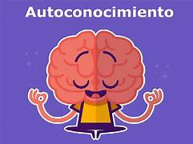
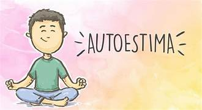
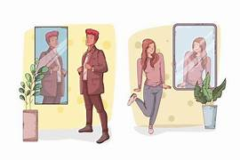
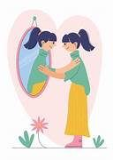

Diccionario
Autoconocimiento
 Definición:
El conjunto de cosas que sabemos acerca de quiénes somos, que nos forman como persona: personalidad, autoimagen, autorrespeto, autoconcepto, autoaceptación y autoestima.
Ejemplo:
Mi personalidad es extrovertida: soy una persona muy habladora y me gusta tener buenos amigos y amigas .
Autoestima.
 Definición:
La valoración, percepción o juicio positivo o negativo que una persona hace de sí misma en los aspectos que la conforman: personalidad, autoimagen, autorrespeto, autoconcepto, autoaceptación; influidos por sentimiento, emociones y pensamientos propios y ajenos.
Ejemplo: Se que soy una persona buena y valiente, que ayudo a los/as demás y atraeré cosas buenas.
Autoimagen.
Definición:
Cómo nos vemos a nosotros/as mismos/as físicamente, representación mental de nuestro físico.
Ejemplo:
Me miro al espejo y me veo bonita en este día.
Autorrespeto.
Definición:
Respeto que te tienes a ti mismo/a y que te ayuda a tener una autoestima positiva.
Ejemplo:
Mi amiga me dijo que era torpe, pero yo se que puedo hacer las cosas bien.
Autoconcepto.
 Definición:
Se refiere a cómo alguien piensa, se evalúa o se percibe a sí mismo de manera consciente.
Ejemplo:
Yo pienso que soy una persona valiente, no tengo miedo a equivocarme.
Autoaceptación.
 Definición:
Es el proceso de reconocer, comprender y aceptar todas las partes de uno mismo, incluyendo los aspectos positivos y negativos.
Ejemplo:
Se que soy una persona nervioso/a, pero para hacer ciertas tareas es bueno.
Aventura

Definición:
Algo que vivimos especial, diferente e interesante.
Ejemplo:
Laura vivió una aventura cuando se perdió en la selva.
Cualidad
Definición:
Característica de una persona o cosa que contribuye a que alguien o algo sea lo que es y como es. Forma de ser.
Ejemplo:
La puntualidad es una cualidad importante.
Desafío
Definición:
Reto, situación difícil.
Ejemplo:
Retransmitir la noticia de un terremoto es un desafío.
Destreza
Definición:
Habilidad con la que se hace algo.
Ejemplo:
Mi prima Ana tiene una gran destreza para el baloncesto.
Personalidad.
Definición:
Es el conjunto de las características psíquicas de una persona que determinan su manera de actuar.
Ejemplo:
María cuando está con sus primas tiene una personalidad diferente, es más graciosa.